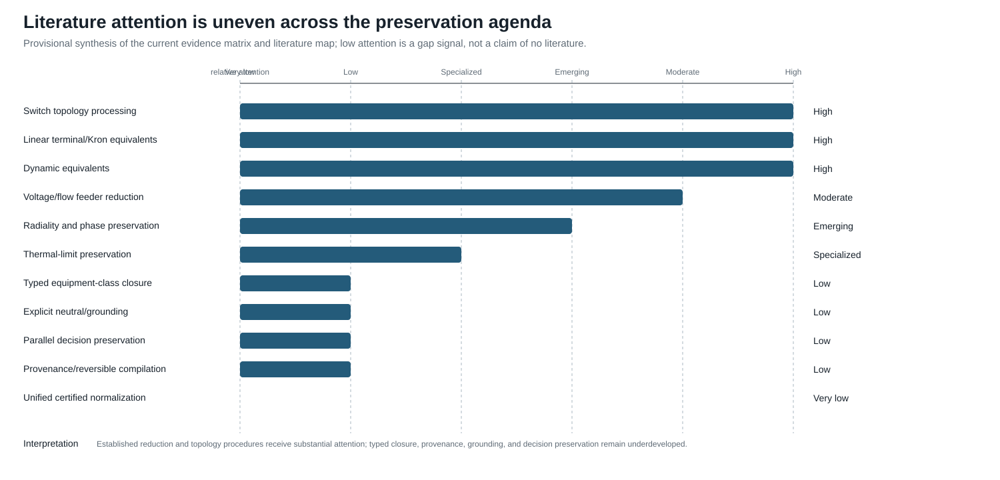

Literature map
Page status: research record; coverage is provisional and not an exhaustive systematic review. Current matrix counts, checksums, search coverage, and coding status are published in the generated review protocol and evidence status page.
The current seed matrix spans several communities. No included record in that matrix supplies the full combination of typed physical assets, multiconductor terminal structure, exact/approximate behavioral maps, decision-constraint preservation, provenance, and executable normalization rules.
Circuit and graph theory
A landscape of graph models
The literature does not converge on one graph class because different models answer different questions. Simple undirected graphs support connectivity, cuts, and generic algorithms; identified multigraphs retain parallel-member identity; oriented incidence graphs supply sign conventions for conservation equations; and hypergraph or factor representations retain relations whose arity exceeds two. Port-based and compositional circuit work gives a rigorous language for multi-terminal behaviour [19], while port-Hamiltonian graph models emphasize interconnection, energy, and passivity [66]. Typed graph-transformation theory adds matching, negative conditions, and rewrite composition [54].
Power-system information models add a different axis: equipment, terminals, connectivity nodes, topological nodes, ownership, protection, and provenance. CIM/CGMES and engineering compilers such as PowerModelsDistribution therefore provide typed data and state-processing views rather than a single electrical graph [51, 52, 61, 62]. Equation and sparsity graphs then project a chosen formulation onto variables, constraints, or nonzero blocks. These models are alternatives or companions, not successive rungs of one universal refinement ladder.
The book selects a linked asset/dependency model and hierarchical port–factor electrical model as its source pair because they jointly retain the identities, terminal structure, behavioural relations, limits, states, and provenance needed by the declared multiconductor decision problems. Simple graphs, oriented multigraphs, nodal-support graphs, and tableau/MNA systems remain important derived views or formulation targets. This is a scoped canonicality claim—canonical for the book's source contract—not a claim that these are the only valid graph models or that the literature has a unique standard.
Kron reduction gives the foundational boundary-variable elimination through a Schur complement. Dörfler and Bullo analyze the resulting topology, algebra, spectrum, effective resistance, and sensitivity for loopy Laplacians [18]. This is the right reference for exact linear terminal reduction, but its retained graph is an equivalent network rather than a physical asset model.
Caliskan and Tabuada extend Kron ideas to generalized electrical networks in the time domain and identify homogeneity conditions under which compatible network structure survives [20]. This is one of the closest theoretical precedents for construction-aware closure rules.
Circular planar resistor-network theory studies response matrices, local electrical transformations and recoverability. Curtis and Morrow provide a book-length treatment [15]. This literature teaches that boundary equivalence, internal identifiability, minimality, and a unique normal form are different questions.
Baez and Fong separate circuit syntax from external behavior through a compositional black-box construction [19]. Port-Hamiltonian systems similarly emphasize energy, ports, interconnection and passivity [66]. These frameworks are strong foundations for multiport composition but do not by themselves encode utility asset semantics or OPF decision constraints.
Multiphase topology and nodal assembly
Gan and Low make an important distinction between macro- and scalar-level topology: a radial multiphase feeder has an equivalent scalar support graph with a clique associated with each densely coupled line [16]. Their BIM/BFM treatment likewise identifies each bus–phase pair with a scalar coordinate while continuing to exploit radiality at the bus level [17]. This is direct precedent for keeping bus-level radiality separate from conductor-expanded matrix cycles.
Kettner and Paolone assemble the compound nodal admittance matrix from a polyphase branch incidence matrix and block-diagonal primitive admittances, then derive rank conditions relevant to Kron reduction [8]. Coppo, Bignucolo and Turri expose nested primitive, winding, and connection maps for general multiphase transformers [14]. Together these works support the book's factor-stamping view. They do not make the inverse decomposition unique: asset identity, limits, states, and primitive lineage still have to be retained outside the assembled nodal operator.
A software-facing companion makes the same bridge explicit for four-wire unbalanced power flow: matrix-valued series and shunt data feed a nodal current-injection method, while a radial backward–forward sweep uses an element-wise impedance view [31]. The primary three-phase distribution methods of Cheng and Shirmohammadi and of Zimmerman and Chiang provide complementary precedents for unbalanced feeder equations and radial solution structure [67, 68]. These sources establish method-specific modelling and solution results, not a universal four-wire, grounding, or decision- preservation contract.
Mutually coupled corridors and multi-voltage lines
The classical building-block literature does not require mutually coupled branches to share endpoints. Wortman, Allen and Grigsby construct a multiport steady-state network model from linear-graph incidence and joint component blocks, including mutual coupling, neutral and static conductors, and finite earth conductivity [33]. Standard power-system analysis texts then interpret the nodal stamp of two coupled scalar branches as an equivalent uncoupled terminal lattice [34]. This supports an exact equation-level lowering, not identification of the lattice edges with physical lines.
Kersting develops phase impedance and shunt admittance models for physically parallel distribution lines on common poles, rights of way, or trenches [41]. Yan and Saha address the more revealing cross-voltage case: an 11 kV three-wire circuit and a 415 V four-wire circuit sharing poles, with the joint phase-coordinate relation assembled into an unbalanced current- injection load flow [40]. Dziendziel, Kocot and Kubek develop multi-circuit, multi-voltage HVAC line models and state the product-voltage base required for mutual per-unit quantities under a common power base [35].
Protection work emphasizes a narrower but operationally important projection: zero-sequence mutual coupling can dominate ground-fault and distance-element behaviour, and partial shared corridors require model section boundaries at the coupling start and end points [36]. CIM, PowSyBl, and PowerWorld accordingly retain explicit relations between two line identities and their coupled intervals [37–39]. These records are implementation precedent for section-to-section coupling, while their usual short-circuit and scalar zero-sequence scope is narrower than a full phase-domain source primitive.
The book's coupled multi-voltage corridor case synthesizes these strands as a typed path from line assets and section-coupling records to one joint factor, then to a guarded nodal stamp or equivalent lattice with current and provenance recovery.
Ground-return impedance and earth modelling
Carson's original ground-return treatment derives overhead-wire propagation under a homogeneous half-space idealization [69]. It is an important physical anchor for earth-return impedance, but it does not identify the earth conductor, grounding topology, protection state, or uncertainty semantics of a modern multiconductor network. The book therefore treats Carson-style impedance as one possible reduced-earth factor and keeps explicit earth conductors, bonds, and grounding observations as separate model objects.
Circuit formulations beyond nodal admittance
The circuit literature supplies several established equation targets rather than one universally correct matrix. Classical nodal analysis is compact when each retained element contributes a voltage-to-current relation. Modified nodal analysis augments node voltages with selected branch currents, making ideal voltage sources and current-controlled elements explicit [2]. Sparse tableau formulations retain branch- and device-level variables and equations, with sparsity and elimination treated as separate design choices [3].
This distinction is directly relevant to power-network models. Sparse-tableau OPF and node–breaker work keeps multi-port elements, breaker actions, and member-level constraints in the formulation instead of rebuilding a different fixed $Y_{\mathrm{bus}}$ matrix for every state [4]. The lesson is not that tableau is always preferable: it is that a nodal admittance target is a guarded lowering for a declared variable set and query family, not a universal representation of a power network.
The book therefore treats nodal support, MNA/tableau systems, branch-current models, hybrid port parameters, and general port–factor relations as related but non-identical formulation families. A formulation may be equivalent after regular elimination for one boundary-voltage observation while failing to preserve switching decisions, asset identity, grounding paths, current limits, or multi-terminal behaviour. The new circuit formulations and lowering boundary chapter records these guards as part of the representation choice rather than as an implementation detail.
Power-system network reduction
The cited power-system reduction literature emphasizes external-system equivalents, Kron/Ward/REI methods, coherency, and dynamic model reduction. "Structure preserving" has several meanings.
Ward's original construction treats suppressed loads and generation as approximately constant current, retains tie terminals, and realizes the external network as a boundary mesh with equivalent terminal injections [21]. The operating-state extended Ward construction addresses boundary-bus designation, external shunts, and contingency use from a single estimated state [22]. Ward–PV instead retains external generator buses after load-node elimination and may then aggregate coherent generator groups [23]. These sources support a family taxonomy, not one universal Ward operator.
Grudzien and coauthors use topology-guided reductions of lines, trees and triangular subgraphs while preserving power-flow behavior for their model class [70]. Sistermanns and coauthors seek to avoid artificial entities and maintain physical correspondence for selected transmission-grid features [71]. These works are directly relevant, although they do not establish a general typed asset-preservation framework.
The line-limit-preserving equivalent work demonstrates that thermal transfer constraints require special treatment beyond ordinary network equivalencing [32]. This should be regarded as a prototype of a broader theory of decision-set preservation.
Molzahn studies a complementary operation for parallel scalar AC lines: delete a flow-limit constraint only after a positive-semidefinite quadratic containment test proves that another parallel member implies it at both line ends [1]. This is especially important for the book's taxonomy. It is exact presolve on an unchanged physical model, not parallel asset aggregation. The result gives a concrete decision-feasible-set certificate and a useful transmission special case, while leaving open the multiconductor, state-dependent, and asset-decision generalizations. In the reported PEGASE cases, the method identified between 203 and 650 redundant parallel-line limits, with MIPS OPF runtime reductions of 2.0% to 5.7%; these are useful presolve results, not evidence for replacing the lines.
Distribution feeder reduction
Pecenak and coauthors address multiphase unbalance, mutual coupling and spatial variation while targeting accuracy at selected critical buses [65]. Opti-KRON work targets voltage reproduction, phase connectivity [24] and restored radiality [25]. This literature is more sensitive than classical transmission equivalents to phase availability and feeder topology, but explicit neutral grounding, physical line codes, parallel-asset decisions, protection and provenance remain underdeveloped.
OpenDSS implements practical reduction options including unloaded-intermediate bus elimination, short-line merging, parallel-line merging and lateral aggregation [63]. These procedures are important test cases for formalization: their operational usefulness is clear, while their preservation domains and failure cases deserve explicit certificates.
Topology processing and information models
CIM's connectivity/topological-node distinction and software such as PowSyBl document state-dependent topology processing [51, 53]. Its limitation for this agenda is not correctness but scope: connectivity quotienting is only one of the transformations needed. An automated topology-processor study makes the EMS boundary concrete: breaker and substation configuration data are converted into network topology for state estimation, with implementation and timing evaluated on test systems [72]. That is prior evidence for a topology- processing function, not evidence that the book's typed quotient preserves all electrical, asset, or decision semantics. The evidence rows for CGMES and PowSyBl describe this same underlying connectivity-node-to-topological-node map, while remaining separate records: one is a standards/building-process source and the other is an implementation and API source. They are therefore related evidence, not duplicate citations.
PowerModelsDistribution provides a concrete engineering-to-mathematical compiler and supports conductor terminals, grounding and multiwinding transformers [61, 62]. It offers an excellent implementation case study for provenance-aware compilation.
Graph transformation and model-driven engineering
Typed algebraic graph transformation supplies formal rule matching, negative application conditions, rewrite composition, critical-pair analysis and confluence [54]. These ideas are well-developed in formal software and systems model-transformation literature but have not been deeply integrated with power-system network equivalents. The W3C PROV-DM recommendation supplies a separate provenance vocabulary for entities, activities, agents, and derivations [73]. The book combines these as conceptual anchors for transformation traces and source-to-target lineage; it does not claim that either source already defines the proposed electrical certificate calculus.
Literature-position table
The table records the boundary between prior work, the book's synthesis, and repository evidence. “Repository demonstrates” refers to the checked fixtures and generated artifacts in this project; it is not independent validation of the cited literature or external review of the book's assumptions.
Source-type legend
The literature map keeps source authority separate from the book's own evidence. The same topic may therefore appear in several rows without those rows being interchangeable.
| Source class | What it can establish here | What it cannot establish here |
|---|---|---|
| Peer-reviewed primary paper | A published method, theorem, derivation, or reported case under its stated assumptions | That the book's broader model, implementation, or claims are equivalent to the paper's scope |
| Standard or information-model specification | Normative vocabulary, profile structure, exchange requirements, or documented semantics | Electrical behaviour, solver convergence, or preservation of omitted asset/decision detail |
| Official software documentation | Intended API, data model, topology operation, or documented implementation behaviour | A peer-reviewed theorem, universal semantics, or independent validation of the current version |
| Author-derived result or repository reproduction | A traceable computation, fixture result, or independent reimplementation when its method is declared | External review, source-faithful utility validation, or global optimality unless separately demonstrated |
| Project proposal or synthesis | The book's definitions, taxonomies, research questions, and proposed certificates | Prior-art status or evidence that the proposed calculus is already established |
| Chapter or foundation | Literature establishes | Book synthesizes | Repository demonstrates | Open boundary |
|---|---|---|---|---|
| When the general model collapses | Symmetrical coordinates and sequence analysis [12] | Exact positive-sequence restriction requires operator, grounding, decision, and observation invariance | Circulant/non-circulant sequence witnesses and balanced transmission fixture | Unbalanced controls, phase-specific limits, and external mathematical review |
| Circuit coordinate transformations | Ground-return physics [69] and multiphase power-flow methods [67, 68] | Phase-to-neutral and phase-to-phase maps are distinct from neutral deletion and Kron elimination | Four-wire ladder, grounding guards, and coordinate-action tests | Typed four-wire/three-wire certificates and standards-aligned validation |
| Kron, Ward, and optimized equivalents | Kron, Ward, and feeder-reduction families [18, 21, 65] | Boundary behavior, calibration-point approximation, decision preservation, and physical realizability are separate objects | Typed Kron covariance, Ward/scenario probes, and recovery witnesses | Source-faithful Opti-KRON validation and global nonlinear claims |
| Node–breaker and topology processing | Connectivity/topological-node models and EMS topology processors [51, 53, 72] | Topology processing is a state-conditioned quotient with provenance, not a complete electrical reduction | Active-state connectivity, two-level topology, and graph-surgery witnesses | Full state-estimation/protection integration and utility-model validation |
| Data model crosswalk and provenance | CIM/CGMES information models, engineering compilers, graph transformation, and PROV [52, 54, 61, 73] | Source-to-canonical maps must expose losses, inferences, identities, and recovery obligations | Version-pinned crosswalks, certificates, provenance manifests, and schema checks | Round-trip adapters, profile conformance, and independent domain review |
| Parallel-member and decision cases | Scalar exact constraint-pruning theory [1] and multiphase OPF formulations [16, 17] | Preserving a feasible set is not the same as aggregating assets or preserving topology | Multiconductor, four-wire, nominal-π, and joint implication witnesses | Broader contingencies, protection, uncertainty, and external case validation |
Current assessment
| Topic | Attention | Main limitation relative to this agenda |
|---|---|---|
| Switch topology processing | High | state quotient, not general physical normalization |
| Linear terminal/Kron equivalents | High | artificial edges; limits and assets usually omitted |
| Dynamic equivalents | High | preservation is input–output/dynamic, not asset semantic |
| Voltage/flow-oriented feeder reduction | Moderate | scenario/application dependent |
| Radiality and phase preservation | Emerging | limited device and neutral detail |
| Thermal-limit preservation | Specialized | not generalized to arbitrary decision constraints |
| Typed equipment-class closure | Low | few formal rewrite guards |
| Explicit neutral/grounding preservation | Low | often eliminated or treated as an implementation detail |
| Parallel-asset decision preservation | Low | exact scalar constraint pruning exists, but aggregation and multiconductor/state-dependent cases remain open |
| Provenance and reversible compilation | Low | implemented inconsistently, weakly theorized |
| Unified certified normalization | Very low | central research gap |
This table is a provisional assessment to be replaced by a systematic review with a reproducible search protocol and coded evidence matrix.

The figure is a synthesis aid, not a bibliometric score or prevalence claim. Its attention labels are the book's provisional assessment of the coded seed matrix; they identify where the cited record is more developed for this agenda and where the book's proposed typed-closure, grounding, decision-preservation, provenance, and certified-normalization questions remain weakly represented.
Current evidence-matrix snapshot
The versioned matrix in review/evidence-matrix.csv is a single-coded snapshot; its generated status page reports the current included/excluded counts. The records cover parallel-line constraint pruning, graph-aware Kron/power-flow reductions, multiphase OPF formulations, structure-preserving feeder and transmission reduction, CGMES topology processing, and circuit/graph formulation precedents. The rows intentionally preserve different exactness labels and limitations; they are not merged into a single claim about “network reduction.”
The 2026-08-14 seed search and its limitations are archived in review/search-runs/2026-08-14-seed-batch.md; the targeted 2026-08-16 multiphase/practical-reduction pass is archived in review/search-runs/2026-08-16-multiphase-and-practical-reductions.md. Database exports, duplicate resolution beyond the coded seed, full-text screening, and independent double-coding remain open tasks.